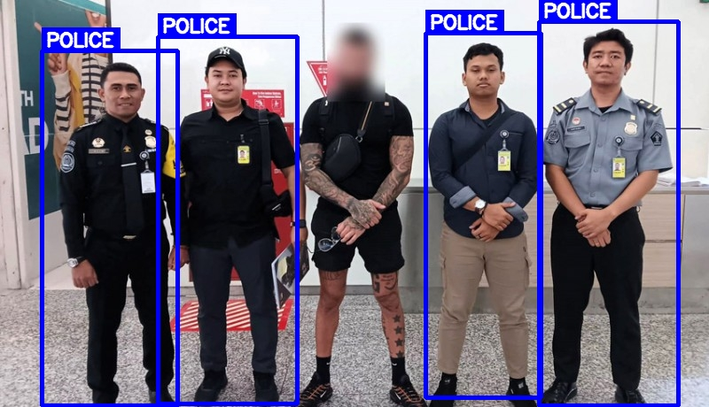
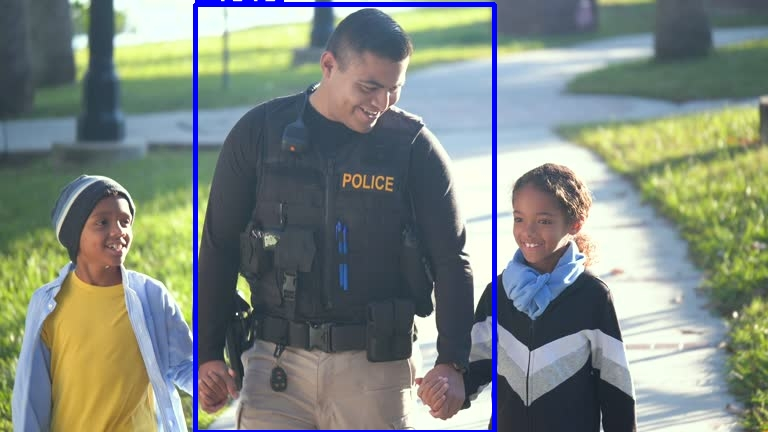
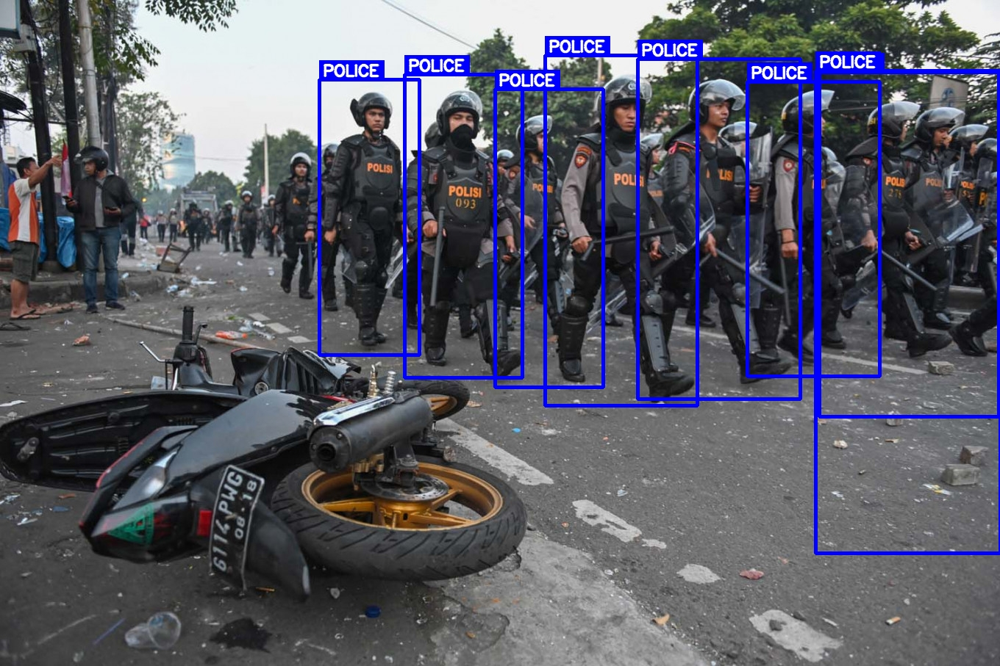
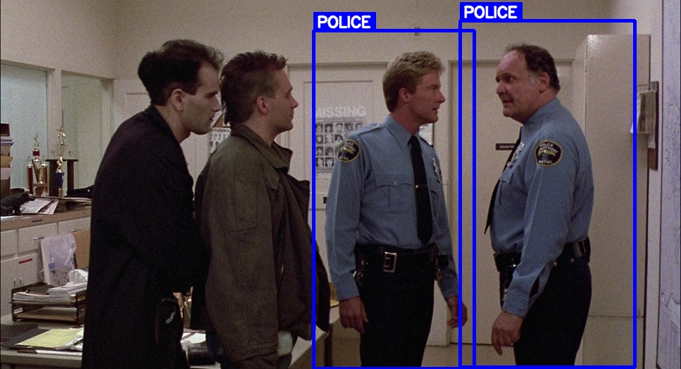

Detection Outputs
Model Detection Results
Sample frames showing the model distinguishing police officers (bounding boxes labeled "Officer") from civilians ("Person") across different environments.





Live Demos
Detection Demo Videos
Recorded inference runs demonstrating real-time classification of police officers versus civilians across multiple scenarios.
Technical Deep-Dive
Project Overview
This project trains a YOLOv8 object detection model to perform binary classification in a joint detection–classification pipeline. The model learns to identify police officers specifically by their uniforms, badges, helmets, and equipment, distinguishing them from civilians even in crowded or cluttered environments.
Training data was collected and annotated using Roboflow, covering diverse lighting conditions, camera angles, and crowd densities. The model is fine-tuned from the YOLOv8 pretrained weights using transfer learning, significantly reducing the data and compute required to achieve high classification confidence.
Key Features
- Two-class detection: Police Officer vs. Civilian with confidence scores
- Bounding-box annotations rendered on every inference frame
- Supports both video file input and live webcam/CCTV stream
- Configurable confidence threshold and NMS IoU cutoff
- Frame-by-frame export of annotated results as images and video
Training Approach
- Base model:
yolov8m.pt(medium variant) pretrained on COCO - Custom dataset annotated in Roboflow with bounding boxes per class
- Data augmentation: horizontal flip, mosaic, random brightness/contrast
- Training hardware: GPU-accelerated (Google Colab / Kaggle)
- Loss functions: Box regression (CIoU), classification (BCE), objectness
Applications
- Public safety — automated situational awareness for surveillance systems
- Smart city CCTV analytics
- Crowd management during events
- Law enforcement deployment verification